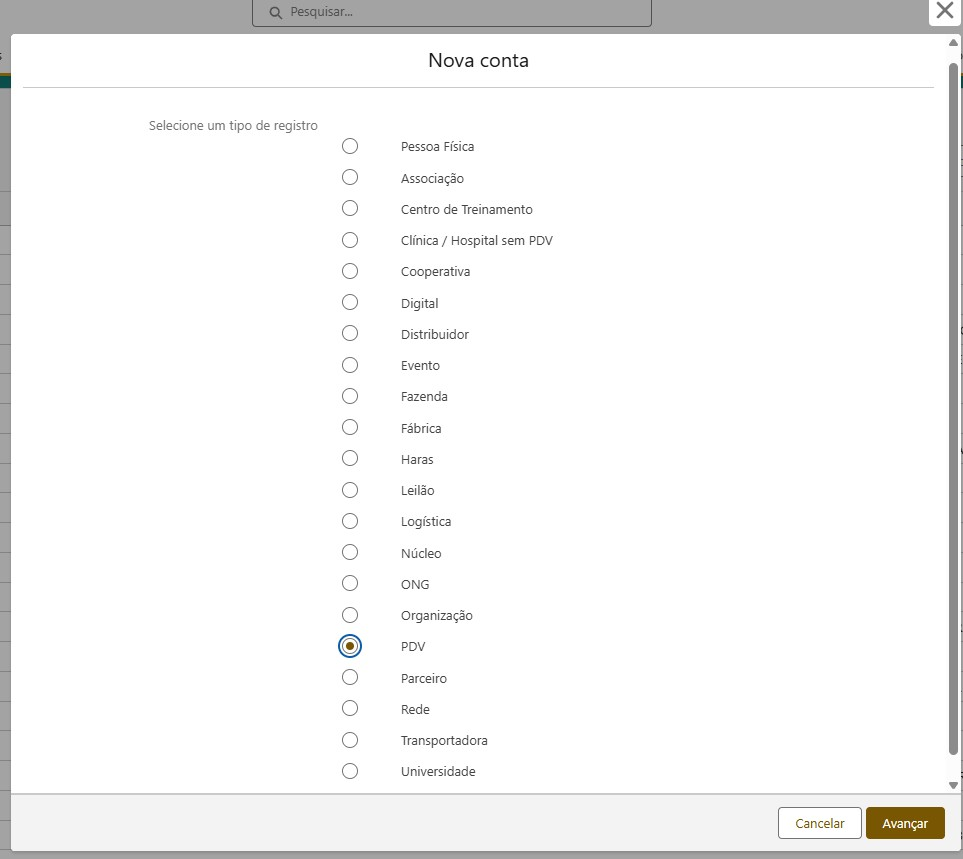
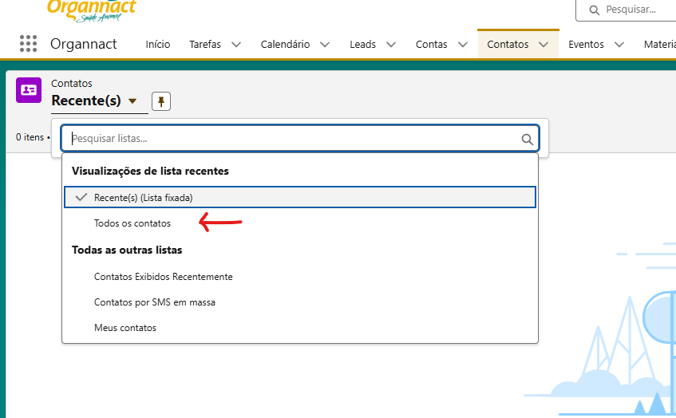
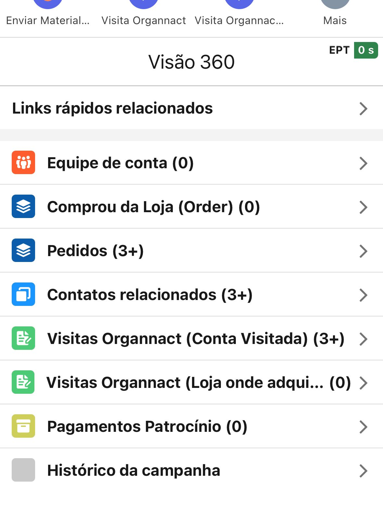
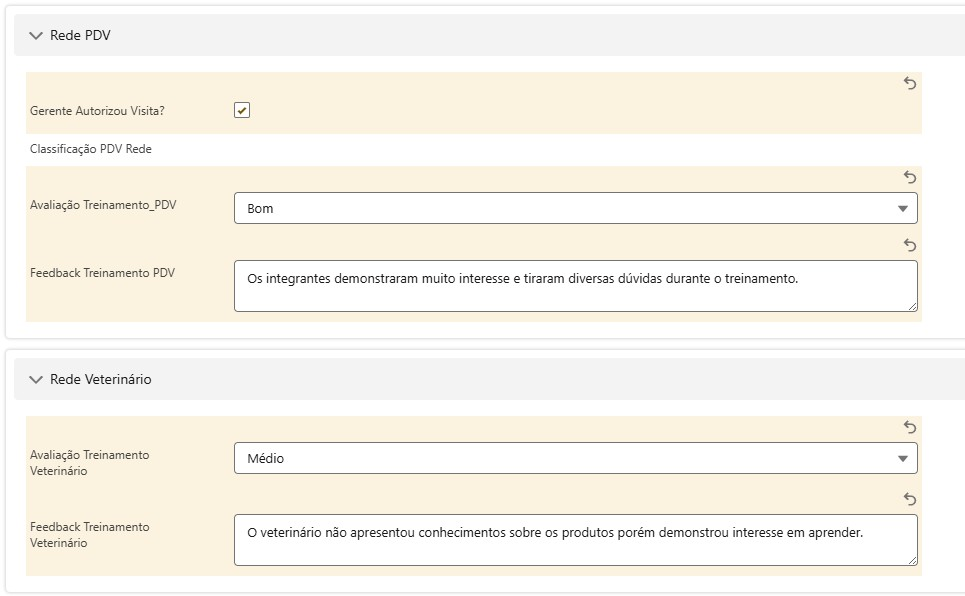
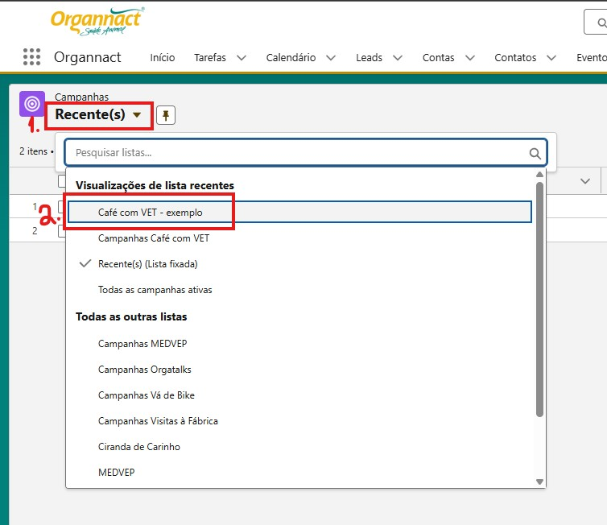
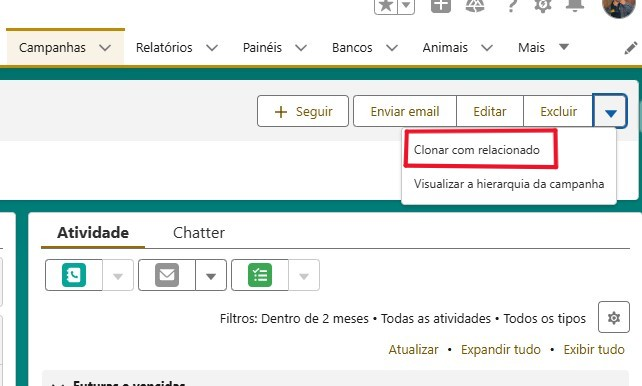
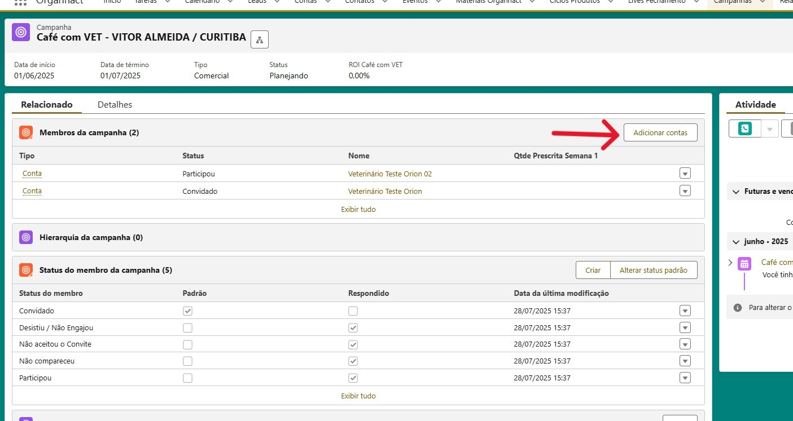
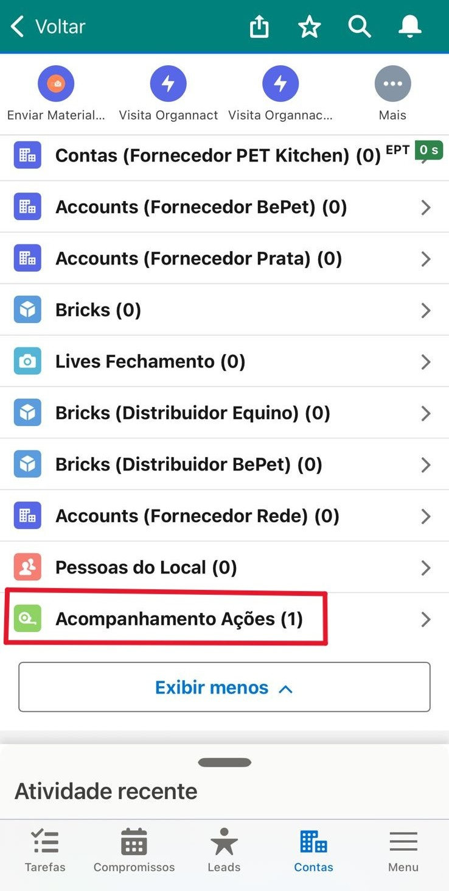

Este é um erro comum! O campo CRMV precisa de ser preenchido num formato específico: a sigla do estado, um hífen e depois o número.
Formato correto: UF-99999 Exemplo: PR-12345
Tente usar termos de busca diferentes. Procure pelo nome fantasia, razão social ou CNPJ. Se ainda assim não encontrar, verifique se você não tem algum filtro ativo na sua lista de exibição que possa estar ocultando o registro.
Normalmente, no Salesforce o seu desempenho pode ser visualizado na aba "Relatórios" (Reports), clique em "Todos os Relatórios", pesquise por "Lista KPIs para Conferência". Pronto, ali você terá um relatório dos seus KPIs.
"Lead" é um termo usado para um contato inicial, um potencial cliente que demonstrou algum interesse mas que ainda não foi qualificado. É o primeiríssimo estágio de uma prospecção.
Tutorial: Contas
📝 Criando uma Nova Conta
Manter nossa base de clientes atualizada é fundamental. Veja como é fácil adicionar uma nova conta no sistema.
No menu superior, vá para a aba "Contas" e clique no botão "Criar" no canto superior direito.
Uma janela aparecerá para você escolher o tipo de registro. Selecione a opção que melhor descreve a conta (PDV, Clínica, etc.) e clique em Avançar.

Escolha o tipo de conta que você está criando.
Agora, preencha as informações da conta. Quanto mais detalhes você adicionar, melhor! Isso ajuda a entender o cliente e a planejar futuras visitas.
Depois de salvar, entre na conta que você acabou de criar para adicionar mais informações, como Endereço de Entrega e outras observações importantes.
Perguntas Frequentes
A Conta é a empresa (a clínica, o pet shop, o distribuidor). O Contato é a pessoa que trabalha lá (o veterinário, o comprador, o tosador). Todo Contato deve estar dentro de uma Conta.
Informações detalhadas como melhores horários para visita, potencial de compra e contatos principais nos ajudam a construir um relacionamento mais forte com o cliente e a sermos mais eficientes em nossas visitas e negociações.
Este é um erro comum! O campo CRMV precisa de ser preenchido num formato específico: a sigla do estado, um hífen e depois o número.
Formato correto: UF-99999 Exemplo: PR-12345
Tutorial: Contatos
O que são Contatos?
Pense em Contas como as empresas (clínicas, pet shops) e em Contatos como as pessoas que trabalham lá. Cada veterinário, comprador ou funcionário importante com quem você fala deve ser um contato dentro da conta da empresa.
Visualizando seus Contatos
Vá para a aba "Contatos". Por padrão, você verá a lista "Recentes".
Para ver todos os contatos da sua região, clique no nome da lista (ex: "Recentes") e selecione "Todos os Contatos".

Mude o filtro para "Todos os Contatos" para ver a lista completa.
Criando um Novo Contato
Conheceu alguém novo numa visita? Adicione essa pessoa como um contato para não perder nenhuma informação importante!
Na aba "Contatos", clique no botão "Criar".
Selecione o país do contato (normalmente "Contato (BR)") e avance.
Agora, preencha o MÁXIMO de informações disponíveis. O mais importante é ligar este novo contato a uma conta já existente.
Nome da conta: Digite o nome da conta de onde é esse contato. Ex: Clínica & Petshop Juquinha's
Tratamento Diga qual é o tipo de tratamento desse contato. Ex: Sr.
Nome completo: Preencha o nome e sobrenome da pessoa. Ex: Pedro Silva
Dados para contato: Adicione o e-mail e telefone.
Função e hierarquia: Indique o cargo da pessoa. Ex: Balconista ou Veterinário.
Clique em "Salvar".
Perguntas Frequentes
Você deve criar o mesmo contato associado às duas contas diferentes. O Salesforce permite essa flexibilidade, mantendo o histórico de relacionamento separado para cada local de trabalho.
Tutorial: Visitas Organnact
Agendando uma Visita
Este é o registro padrão para a maioria das suas interações. Use-o para planejar e documentar suas visitas de rotina aos clientes.
Acesse Contas e pesquise pela Conta que deseja visitar (ex: PDV, Veterinário, Clínica).
Clique no botão superior "⚡Visita Organnact".
Na janela de criação, marque as caixinhas relacionadas à sua visita (ex: "Propagandista? ✅").
Preencha o campo de Assunto.
Em Forma de Contato, informe se será presencial.
Defina a Data / hora de início e Data / hora final para agendar a visita.
Deixe o checkbox "Visita Realizada?" desmarcado por enquanto, pois estamos apenas agendando.
Marque se o Coordenador Técnico irá te acompanhar.
Clique em Avançar. Pronto, sua visita está agendada no seu calendário do Salesforce!
Vídeo Tutorial
Para assistir o vídeo tutorial de Visitas Organnact - Como CRIAR/AGENDAR a partir da conta, basta clicar no botão abaixo.
Você será redirecionado(a) para a plataforma VideoHub.
Durante a Visita
É fundamental registrar as novas pessoas com quem você conversou. Fazer isso na hora garante que nenhuma informação se perca!
Na página da Conta que está sendo visitada, vá em Visão 360 > Contatos Relacionados.
Clique em Novo Contato para cadastrar as pessoas com quem conversou. (Atenção: O sistema não deixa cadastrar a mesma pessoa várias vezes!)
Na mesma tela, você pode clicar em Adicionar Relacionamento para vincular um contato já existente a esta conta.
Finalizando a Visita
Após o encontro, é hora de finalizar o registro para que ele conste em seus relatórios e conte para seus KPIs.
Dentro do módulo Visitas Organnact, clique na Visita que deseja finalizar.
Clique em Editar.
Preencha os Resultados da Visita e marque o checkbox de "Visita Realizada?".
Depois de salvar, volte para a página da Visita e clique em "Relacionado".
Em "Pessoas da Visita", clique em "Criar" e adicione o nome do contato que você criou ou conversou durante a visita.
💡 Dica de Ouro: Se a conta que você está visitando for do tipo "Veterinário", o sistema é inteligente! Ele já adiciona o nome do próprio veterinário como Pessoa da Visita para você. Um passo a menos no seu dia a dia!

Editando a visita para registrar sua conclusão.
Lembrete: Antes de adicionar "Pessoas da Visita", o contato (ex: balconista, auxiliar, tosador, etc) já deve estar criado e relacionado a esta Conta. Se precisar de ajuda, para ver o tutorial de como criar um contato.
Visita Tipo DN/DNE
🗓️ Agendando a Visita DN/DNE
O processo para agendar uma visita a um Distribuidor (DN/DNE) é muito parecido com o de uma visita de propagandista. A única diferença é o tipo de visita que você vai selecionar.
Vá até a Conta do distribuidor que você irá visitar.
Clique no botão "⚡Visita Organnact".
Na janela que abrir, marque a caixinha "DN/DNE? ✅".
Preencha os outros campos como Assunto, Data e Hora, e clique em Avançar.
Pronto! A sua visita ao distribuidor já está agendada no seu calendário.
✅ Finalizando e Adicionando Produtos
Ao finalizar a visita, o sistema cria automaticamente um Pedido DN/DNE. Agora, você precisa adicionar os produtos que foram negociados.
Abra a visita que você acabou de realizar.
Clique em Editar para marcar a visita como "Realizada" e preencher os resultados.
Após salvar, você verá um campo chamado "Negociação" com um número de pedido (ex: PED-00123). Clique nesse número.
Localize o campo "Negociação" e clique no número do pedido.
Você será levado para a página do Pedido. Vá até a seção "Produtos Solicitados".
Clique em Adicionar Produtos, pesquise pelos itens negociados, defina as quantidades e salve.
Missão cumprida! Sua visita e o pedido correspondente estão registrados corretamente no sistema.
Perguntas Frequentes
Primeiro, confirme se você marcou a caixinha "DN/DNE? ✅" ao criar a visita. Se sim, e mesmo assim o pedido não apareceu, entre em contato com o suporte através da nossa comunidade no WhatsApp para verificarmos o que aconteceu.
Visita Tipo Ações
🗓️ Agendando a Visita de Ações
Para registrar uma visita de acompanhamento de ações, como a campanha "Vá de Bike 2.0", o processo de agendamento é o mesmo, mas você deve marcar o tipo de visita correto.
Na página da Conta que possui a ação, clique em "⚡Visita Organnact".
Na janela de criação, marque a caixinha "Ações? ✅".
Preencha o Assunto e a Data/Hora da sua visita e salve.
📋 Verificando a Ação no Local
Ao chegar no local, seu objetivo é verificar o andamento da campanha. O Salesforce te ajuda com um checklist simples para garantir que nada seja esquecido.
Abra o registro da visita que você agendou (ex: VI-000399345).
Você verá a seção "Ações", como na imagem abaixo.
Marque os checkboxes para confirmar se os materiais estão bem expostos, se a bike está funcionando, etc.
Na seção "Vendas da Visita", você pode registrar os SKUs e valores vendidos durante sua presença no local.
Quando terminar, não se esqueça de marcar a visita como "Realizada" e clicar em Salvar.
Checklist para verificar o andamento da campanha durante a visita.
Perguntas Frequentes
Sim, é altamente recomendado! Adicionar fotos do "antes e depois" de uma gôndola, da exposição dos materiais ou do evento acontecendo enriquece muito o registro e comprova a execução da ação.
Se não houver uma campanha ativa vinculada àquela conta, a seção "Ações" não aparecerá no registro da visita. Ela só é exibida quando necessário para a conta específica.
Visita Tipo Redes
🗓️ Agendando a Visita de Redes
O agendamento de uma visita para uma conta do tipo "Rede" segue o mesmo padrão das outras visitas. A principal diferença está na seleção do tipo correto.
Vá até a Conta da rede que irá visitar.
Clique no botão "⚡Visita Organnact".
Na janela de criação, marque a caixinha "Redes? ✅".
Preencha o Assunto, Data/Hora e salve.
✍️ Preenchendo a Avaliação da Rede
Após agendar a visita, ao abri-la para finalizar, você verá secções especiais para avaliar os treinamentos realizados na rede, tanto para o PDV quanto para os veterinários.
Abra o registro da visita que você agendou.
Encontre as seções "Rede PDV" e "Rede Veterinário".
Preencha os campos de Avaliação e Feedback para cada um. Por exemplo:
Avaliação Treinamento PDV:Bom
Feedback Treinamento PDV:Os integrantes demonstraram muito interesse e tiraram diversas dúvidas durante o treinamento.
Avaliação Treinamento Veterinário:Médio
Feedback Treinamento Veterinário:O veterinário não apresentou conhecimentos sobre os produtos, porém demonstrou interesse em aprender.
Quando terminar, marque a visita como "Realizada" e clique em Salvar.

Preencha as avaliações e feedbacks dos treinamentos.
Perguntas Frequentes
Não, os campos de "Rede PDV" e "Rede Veterinário" só aparecem quando você marca o checkbox "Redes? ✅" ao criar a visita. O sistema mostra apenas os campos relevantes para cada tipo de visita.
Visita Tipo Training
Em Breve
Este tutorial está sendo preparado com muito carinho e estará disponível em breve!
Perguntas Frequentes
Um "Training" pode ser mais rápido e focado em um produto específico para uma equipe de vendas, enquanto o "Café com VET" é um evento mais longo, de relacionamento e aprofundamento técnico com veterinários.
Café com VET
Clone uma Campanha Existente
A maneira mais fácil e rápida de criar sua campanha "Café com VET" é clonando nosso modelo. Isso já traz todas as configurações que você precisa!
No menu superior, vá para a aba "Campanhas".
Na visualização de lista, selecione o filtro "Café com VET - Exemplo" para encontrar o modelo facilmente.
Clique no nome da campanha "Café com VET - Exemplo" para abri-la.

Localize a campanha modelo para iniciar a clonagem.
Dentro da página da campanha, clique na setinha para baixo (▼) no canto superior direito e selecione a opção "Clonar com relacionado".

Use a opção "Clonar com relacionado" para copiar a campanha.
Na tela seguinte, marque a caixinha "Status do membro da campanha" e clique em Avançar.
Personalize sua Campanha
Agora é só ajustar os detalhes para que a campanha seja sua!
Altere o Nome da Campanha para um formato claro, como por exemplo: "Café com VET - Seu Nome / Cidade".
Preencha todas as outras informações importantes, como datas, orçamentos e metas.
Clique em Salvar.
Prontinho! Sua campanha está criada.
Adicionando os Convidados
Com a campanha criada, o próximo passo é convidar os veterinários. Você fará isso adicionando as contas deles como membros da campanha.
Dentro da sua nova campanha, vá para a aba "Relacionado".
Encontre a seção "Membros da campanha" e clique no botão "Adicionar contas".

Adicione os veterinários que serão convidados para o evento.
Pesquise e selecione as contas dos veterinários que deseja convidar. Se uma conta não existir, você precisará .
Depois de adicionar, você pode clicar em cada membro para atualizar o Status dele, como "Convidado", "Confirmado", "Compareceu", etc.
📊 Atualizando o Status da Campanha (Muito Importante!)
Manter o status da sua campanha atualizado é essencial para a organização e para os relatórios. Pense no status como a "fase" em que o seu evento se encontra. Não se esqueça de o alterar à medida que a campanha avança!
Para alterar o status, basta entrar na sua campanha e clicar em Editar.
Planejando: 🗓️ É a fase inicial. Você está a organizar o local, a data e a lista de convidados.
Em Progresso: 🚀 A campanha está a acontecer! Use este status durante o período do evento.
Finalizada: ✅ O evento já terminou. Este é o passo mais importante! Marcar como "Finalizada" garante que os seus resultados são contabilizados corretamente nos seus KPIs.
Abortada: ❌ Imprevistos acontecem. Se a campanha foi cancelada, use este status.
Atenção: Nunca se esqueça de marcar a sua campanha como Finalizada assim que ela terminar. É fundamental para que o seu trabalho seja registado nos relatórios!
Vídeo Tutorial
Para assistir o vídeo tutorial de Campanhas - Como criar um Café com VET (do início ao fim), basta clicar no botão abaixo.
Você será redirecionado(a) para a plataforma VideoHub.
Perguntas Frequentes
Registrar como "Evento" bloqueia um tempo maior no seu calendário e sinaliza que foi uma interação mais profunda e focada em relacionamento e educação, e não apenas uma visita de propaganda rápida.
Sim! Depois de criar a campanha, você pode entrar nela a qualquer momento e ir na seção "Membros da Campanha" para adicionar ou remover os contatos (veterinários) que participarão do evento.
Tutorial: Relatórios
Visualizando seus Relatórios
Os relatórios são essenciais para acompanhar seu desempenho e os seus KPIs. Veja como é simples aceder a eles.
No menu superior, clique na aba "Relatórios".
Na página de relatórios, clique em "Todos os Relatórios" para ver a lista completa.
Use a barra de pesquisa para encontrar o relatório que precisa. Por exemplo, digite "Lista KPIs para Conferência" para ver o seu desempenho.
Clique no nome do relatório para o abrir e ver todos os detalhes.
Tutorial: Ação Geradora de Demanda (AGD)
📝 Criando uma Nova AGD
Vamos registrar uma nova Ação Geradora de Demanda para impulsionar os resultados com um veterinário parceiro.
Primeiro, vá para a aba "Contas" e pesquise pela conta do veterinário onde a AGD será criada.
Entre nos detalhes da conta e, na parte superior, clique no botão "Criar AGD Vet".
Agora, preencha os campos iniciais da ação:
Tipo de AGD: Selecione o tipo de campanha. Ex: MEDVEP2026.
Motivo da AGD: Escolha a opção que melhor se encaixa. Ex: Aumento de Giro.
Descrição AGD: Detalhe o que foi combinado com o veterinário. Ex: 200 prescrições de produtos da linha saúde intestinal.
Data Início AGD e Data Fim AGD: Defina o período da ação.
Clique em Avançar. Pronto, sua AGD foi criada com sucesso!
👀 Conferindo a AGD Criada
Para garantir que tudo foi registrado corretamente, você pode visualizar a AGD dentro da própria conta do cliente.
Na página da conta, clique na aba Visão 360.
Procure pela seção AGDs. Ali você encontrará um histórico de todas as ações criadas para aquela conta.
Encontre todas as AGDs registradas na seção "Visão 360".
📈 Fazendo o Acompanhamento da AGD
Lançar a AGD é só o começo. O acompanhamento periódico é a chave para o sucesso!
💡 Dica: O ideal é fazer o acompanhamento da AGD a cada 15 dias para manter os dados sempre atualizados.
Volte para a página da conta e, ao lado do botão "Criar AGD Vet", clique em "Acompanhamento AGD".
Selecione a AGD que você acabou de criar (normalmente a mais recente da lista) e clique em Avançar.
Preencha as informações do período:
Data de Acompanhamento: Insira a data atual do registro. Ex: 01/07/2025.
Total de Prescrições: Informe o número de prescrições realizadas no período. Ex: 30.
Clique em Avançar para salvar o registro.
📊 Visualizando o Histórico de Acompanhamento
Todos os seus registros de acompanhamento ficam salvos, criando um histórico claro do desempenho da ação.
Navegue novamente para Visão 360 > AGDs na página da conta.
Clique na AGD que você está acompanhando.
Role a página para baixo e você encontrará a seção "Acompanhamento Ações", com todas as informações que você incluiu anteriormente.

Acompanhe a evolução da sua AGD através do Acompanhamento de Ações.
Vídeo Tutorial AGD
Para assistir o vídeo tutorial de Como Criar uma AGD (Novo método), basta clicar no botão abaixo.